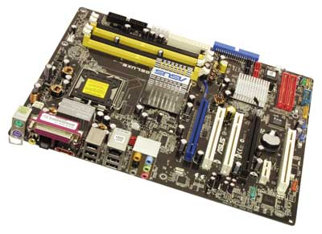
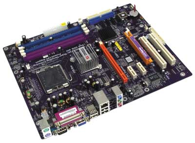
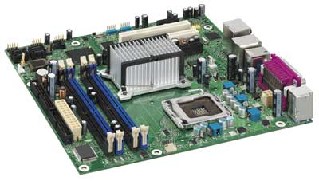

Олег Денисов, Константин Яковлев
Прошедший год не принес сколько-нибудь серьезных изменений ни в плане архитектуры, ни с точки зрения расстановки основных игроков, действующих на рынке системных плат для процессоров Intel (Socket 775). Наборы логики Intel Corporation по-прежнему доминируют в своей стихии. Во всех трех сегментах рынка настольных ПК (бюджетные машины начального уровня, компьютеры среднего ценового диапазона широкого профиля и высокопроизводительные системы для научных и инженерных задач, обработки цифрового контента и развлечений) законодатели мод - НМС 900-й серии. После подписания с Intel кросс-лицензионного соглашения, касающегося портирования SLI-режима на Pentium-платформы, и выпуска НМС Radeon 200 Xpress для аналогичных систем напомнили о себе компании NVIDIA (http://www.nvidia.com) и ATI (http://www.ati.com), стремление которых закрепить свои достижения в соответствующих сегментах можно только приветствовать. А вот тайваньским компаниям, судя по всему, придется расстаться с мыслью о влиянии на формирование рынка НМС для настольных ПК. Их доля из года в год неуклонно снижается, а поступающую информацию о планируемых к запуску новых НМС следует назвать скорее "бумажными" анонсами. Среди жизнеспособных решений, перешагнувших рубеж инженерных образцов, можно отметить разве что продукт SiS 656-й серии в связке с южным мостом SiS966 компании Silicon Integrated Systems (ww.sis.com), хотя и ему в условиях жесткой конкурентной борьбы легкой жизни (читай: успешных продаж) никто не обещает.
Сложившаяся ситуация объясняется довольно просто. В условиях, когда зарабатывать деньги на росте тактовых частот процессоров стало все труднее, когда этот самый рост замер на границе, определяющей возможности ныне действующих норм техпроцессов, капитал предстоит наращивать совсем в других областях. В настоящий момент Intel активно развивает направление многоядерных процессоров, именно с ними связывая свои надежды. Однако, по оценкам компании, время процессоров с двумя и более ядрами на кристалле наступит не ранее III квартала 2006 г. (оптимистичный прогноз), когда "подтянутся" разработчики приложений, а отлаженный процесс производства начнет приносить дивиденды. Совершенно очевидно, что востребованность Pentium D различным ПО сегодня не настолько велика, чтобы можно было говорить о массовой миграции вычислений на двухъядерные платформы. Перекомпиляция и отладка кода наверняка займут не один месяц и потребуют значительных инвестиций. Не будем сбрасывать со счетов и человеческий фактор. Что остается - ждать? И да, и нет.
Параллельно с программой постепенной замены распространенных ныне платформ на системы, работающие с многоядерными процессорами, Intel предложила несколько концепций, идеи которых предстоит воплощать в "железе" в самое ближайшее время. Основные усилия будут направлены на снижение тепловыделения и шума, защиту систем от несанкционированного доступа к аппаратным ресурсам и дальнейшую интеграцию платформ в инфраструктуру беспроводных сетей. Среди долгосрочных перспектив выделим (как один из вариантов) курс на сближение классических настольных и мобильных решений - некий симбиоз, компьютер следующего десятилетия. Все это - планы ближайших трех лет, а пока предстоит рутинная работа в рамках очередного переходного периода.
Замена НМС Intel 915/925-й серии чуть более функциональными наборами 945P/G и 955X происходит постепенно и без лишней помпы, что вполне объяснимо. Кардинальных перемен в архитектуре не произошло, а основные изменения коснулись внутренних шин, причем инициаторами обновлений характеристик НМС в известном смысле можно считать периферийные устройства. Контроллер памяти MCH северного моста "откликнулся на призыв" модулей ОЗУ DDR2-667, а встроенный IDE-контроллер ICH7К южного моста "принял к сведению" запросы накопителей Serial ATA II. В первом случае скорость обмена данными по шине памяти возросла до 10,7 Гбайт/с, а во втором - пропускная способность IDE-канала достигла 3 Гбит/с, плюс функция NCQ, плюс RAID-контроллер.
Период прохладных отношений между Intel и NVIDIA, судя по всему, закончился. Системные платы получили оригинальный nForce4 SLI Intel Edition и технологию Scalable Link Interface, а пользователи - возможность выбора между НМС разных производителей. На момент подготовки материала оптимальными характеристиками встроенной видеоподсистемы обладал набор системной логики Radeon 200 Xpress. По нашим данным, Intel всерьез присматривается к этому решению, выпустив в качестве пробного шара собственную плату Desktop Board D101GGC на его основе, адресованную корпоративному рынку.
А теперь о главном. Переход на новую платформу, которая не оставляет шансов использовать в системе старые компоненты (за исключением накопителей), всегда предполагает некий компромисс между прошлым и будущим. Даже спустя год после расстановки акцентов в пользу PCI Express-платформ "сжигать мосты" крайне нелегко, тем более что существенного прироста в скорости, при прочих равных условиях, системы для процессоров Intel LGA 775 не гарантируют. Однако процесс идет, и причин оставаться на его обочине все меньше. Дискретная графика фактически переведена на PCI Express, модули ОЗУ DDR2 не сегодня завтра сравняются по цене с обычной DDR, а подключать новые диски Serial ATA II с функцией NCQ к старой системе попросту некуда. Дабы разрешить свои сомнения, предлагаем читателям ознакомиться с отчетом о тестировании 12 новейших плат для процессоров Intel (процессорное гнездо Socket 775).
Методика тестированияПроизводительность системных плат при выполнении офисных приложений и в задачах, связанных с обработкой мультимедийного контента, определяли с помощью пакетов PC Magazine Business Winstone 2004 v1.01 и Multimedia Content Creation Winstone 2004 v1.01 - фирменного комплекта тестов журнала PC Magazine, разработанного в сотрудничестве с компанией VeriTest. Производительность процессора и подсистемы памяти оценивали с помощью пакета Sandra 2005 (обновление Service Pack 2, сборка 2005.10.60). Тестовые пакеты PCMark05 и 3DMark05 (сборки 1.10 и 1.30 соответственно) компании Futuremark помогли выявить эффективность использования ресурсов ОЗУ, быстродействие процессора, дисковой и графической подсистем в составе выбранной платформы, а также определить интегральную оценку производительности системы в 2D/3D-приложениях под управлением API Microsoft DirectX 9.0c (экранное разрешение 1024x768, 32-разрядная глубина цвета, параметр вертикальной синхронизации Vsync=Off). Для оценки запаса прочности каждого собранного стенда мы принудительно увеличивали доступными средствами базовую частоту системной шины до 210 МГц, после чего ставили на прогон оба фирменных теста PC Magazine, по результатам выполнения которых делали заключение об устойчивости системы в стрессовых ситуациях. Испытания проводились под управлением ОС Microsoft Windows XP Professional Service Pack 2 (сборка 2600, файловая система NTFS), которая устанавливалась на 200-Гбайт Serial ATA-жесткий диск Seagate Barracuda 7200.7 ST3200822AS. Видеоподсистема была представлена ASUSTeK EN6600GT/Silencer/HDT/256M/A (графический процессор на базе ядра NVIDIA GeForce 6600 GT, объем видеопамяти 256 Мбайт). Чтобы оценить потенциал графического контроллера, интегрированного в НМС системной платы, для указанной категории изделий программа испытаний предусматривала два этапа. Сначала платформа тестировалась совместно с внешней графической платой ASUSTeK, после чего набор тестов выполнялся силами встроенной видеоподсистемы на базе соответствующего ядра. Производительность и устойчивость рассмотренных платформ оценивали с помощью процессора Intel Pentium 4 640 с тактовой частотой 3,2 ГГц и функцией Hyper-Threading (гнездо Socket 775; ядро Prescott; встроенная 2-Мбайт кэш-память L2; частота системной шины 200 МГц). Во все системы устанавливалась пара 240-контактных DIMM-модулей ОЗУ CM2X512-5400C4 компании Corsair Memory общим объемом 1 Гбайт (DDR2-675 SDRAM; латентность сигнала CAS - 4; тайминг 4-4-4-12, напряжение питания 1,8 В). При тестировании плат, допускающих выборочную установку модулей DDR или DDR2, все измерения проводились дважды - для каждого типа памяти. В этих случаях в качестве второго комплекта была выбрана пара 184-контактных модулей ОЗУ компании Kingston PC3200 SDRAM общим объемом 1 Гбайт (DDR400; латентность сигнала CAS - 2; тайминг 2,5-3-3-8, напряжение питания 2,6 В). Для каждой платы с сайта производителя загружалась наиболее актуальная версия BIOS с последующим обновлением микрокода и подключались драйверы набора системной логики (для НМС Intel - Chipset Software Installation Utility версии 7.0.0.1019; для НМС NVIDIA - nForce4 SLI Intel Edition Drivers Set версии 7.13; для НМС ATI - Catalyst Motherboard/IGP Drivers версии 5.10). В качестве драйверов для внешней графической платы применялось фирменное ПО NVIDIA ForceWare 78.01. При тестировании НМС ATI Radeon X200 Xpress и Intel 945G Express, оснащенных встроенным графическим контроллером, устанавливались драйверы ATI Catalyst 5.10 и Intel Graphics Media Accelerator (сборка 6.14.10.4299) соответственно. Для копирования образа жесткого диска и оперативной установки ОС использовались универсальный оптический накопитель DVD+-RW Asus DRW-0804P и коммутатор Gigabyte GN-GT8S Gigabit Ethernet Smart Switch. Энергообеспечение стендов было поручено 550-Вт блокам питания FSP550-60PLN (ATX12V) компании FSP Group. Заявленные производителями основные параметры системных плат, процессоров и ОЗУ сверялись с реальными с помощью утилиты диагностики CPU-Z (текущую, свободно распространяемую версию 1.30 можно загрузить с сайта http://www.cpuid.com). Характеристики участвовавших в тестировании плат приведены в таблице. |
ASUSTek P5LD2 Deluxe

Модельный ряд системных плат компании ASUSTeK для процессоров Intel относительно недавно пополнили изделия семейства AI Life, спроектированные с учетом основных принципов концепции "цифрового дома". В настоящее время компания предлагает шесть продуктов на базе НМС Intel 945/955-й серии и один - на НМС NVIDIA.
Одна из отличительных особенностей плат серии AI Life - дополнительный универсальный порт с интерфейсом PCI Express, который реализован средствами южного моста НМС (максимальная пропускная способность 2 Гбайт/с). Специальная микросхема ASUS Smart Switch распознает, какой конкретно тип устройства установлен в универсальный разъем PCI-Express, после чего распределяет линии PCI Express с целью оптимизации пропускной способности магистрали. Разработчики предусмотрели три возможных режима функционирования порта - x2, x4 и Auto. В первом случае устройство, установленное в разъем, будет работать в режиме PCI Express x2. Следующий режим, PCI Express x4, призван обеспечить двукратный прирост в скорости, однако в этом случае расположенный по соседству порт PCI Express x1 будет на время заблокирован. Как следует из названия, режим Auto самостоятельно определяет для конкретного устройства наиболее подходящий вариант взаимодействия с шиной с точки зрения баланса между производительностью и функциональностью. От себя добавим, что предложенное решение не является разновидностью SLI-технологии и не может использоваться для наращивания потенциала видеоподсистемы путем установки двух идентичных графических плат для работы в паре. Основное назначение порта Universal PCI Express - дать пользователям возможность вывода видеосигнала на четыре дисплея. В этой связи изготовитель предупреждает, что некоторые ускорители трехмерной графики и платы расширений PCI Express не могут функционировать в режиме x2/x4. Для инсталляции таких устройств в систему следует воспользоваться стандартными для платформы LGA 755 средствами - портами PCI Express x16 и PCI Express x1.

Среди непременных атрибутов изделий семейства AI Life - уже получившие прописку на платах ASUSTeK предыдущего поколения фирменные функции AI Quiet и Stack Cool 2, а также две новинки - SATA on the Go и WiFi-TV. Напомним, что первая пара выполняет задачи минимизации шума от работающего ПК, разгрузки цепей питания и снижения энергопотребления. Это достигается средствами специально разработанного модуля преобразования напряжений (защищен патентом), оптимизированной топологии изделия и небольшой платы, расположенной в зоне установки процессора с обратной (по отношению к процессорному разъему) стороны печатной платы. По данным компании, благодаря предпринятым мерам рабочую температуру процессора удается снизить на 10-20°C, что существенно повышает стабильность всей системы и продлевает срок службы основообразующих компонентов платформы. Функция SATA on the Go позволяет подключать к ПК в режиме горячей замены до 16 внешних SATA II-накопителей. Конструктивно она реализована на базе дополнительного контроллера SATA II и пары разъемов, один из которых выведен на заднюю панель портов ввода-вывода.
Главной же инновацией представляется программно-аппаратный комплекс WiFi-TV (опциональная комплектация), объединяющий в себе беспроводной LAN-адаптер стандарта IEEE 802.11a/b/g, FM-тюнер, а также аналоговый и цифровой (стандарт DVB-T) TV-тюнер. Разработанная для этих целей PCI-плата расширения совместно с ИК-пультом ДУ, FM-антенной и ПО призвана материализовать идею цифрового дома на практике за разумную цену. Как показали испытания, с этой задачей продукт ASUSTeK справился вполне.
В нашем тестировании семейство AI Life системных плат ASUSTeK на базе наборов системной логики Intel представляла ATX-плата P5LD2 Deluxe. Изделие выполнено на НМС Intel 945P Express и оснащено двумя парами разъемов для установки модулей ОЗУ DDR2 SDRAM, обеспечивая двухканальный режим работы. Продукт предназначен для работы с процессорами Pentium 4/Pentium D и Celeron D, совместим с функциями Intel EM64T и EIST и может работать на частоте системной шины 533, 800 или 1066 МГц.
Среди достойных упоминания фирменных функций - HyperPath 3, призванная снизить задержки при обмене данными между процессором и ОЗУ (раздел Advanced утилит BIOS Setup), AI NOS (Non-delay Overclocking System) - технология повышения производительности системы сообразно выполняемым в данный момент задачам и AI NET 2 - диагностический комплекс сетевых соединений с возможностью обнаружения неполадок в кабеле на расстоянии до 100 м с погрешностью в 1 м.
Проектируя эту модель, разработчики наделили P5LD2 Deluxe всем необходимым для успешной работы в составе мощной мультимедийной станции или домашнего медиа-центра с расширенными возможностями интеграции в сетевую среду. Именно этим можно объяснить присутствие на плате двух дополнительных SATA и PATA-контроллеров, которые совместно со штатным ICH7R обеспечивают системе девять каналов (один из них обслуживает внешние накопители SATA II). Таким образом, на базе этой платы можно создавать различные комбинации RAID-массивов, обеспечивая надежную сохранность данных или повышенную производительность дисковой подсистемы.
Коммуникационные возможности платы представлены гигабитным сетевым контроллером, двумя портами IEEE 1394a и десятью портами USB 2.0. Большинство плат семейства AI Life получили специальный сертификат и логотип от компании Dolby Laboratories, подтверждающие высокий уровень встроенной аудиоподсистемы. В частности, у протестированной нами модели P5LD2 Deluxe восьмиканальная система на базе кодека Realtek ALC882M удостоена сертификата Dolby Master Studio, что на практике означает реализацию четырех фирменных функций Dolby Prologic IIx, Dolby Headphone, Dolby Virtual Speaker и Dolby Digital Live (доступны через панель Realtek HD Audio Manager). Набор традиционных аудиоразъемов дополнен цифровыми коаксиальным и оптическим S/PDIF-выходами, размещенными на месте одного из COM-портов.
Дизайн платы следует признать довольно удачным. Пассивная система охлаждения мостов НМС не создает излишнего шума во время работы, а взаимное расположение портов для PCI-плат расширений и основных контактных групп позволяет инсталлировать базовые компоненты ПК без всяких затруднений. В свою очередь, наглядные пособия по сборке и хорошо продуманная комплектация дают возможность выполнить все процедуры с минимальными затратами времени. Анализ результатов, продемонстрированных продуктом ASUSTeK, свидетельствует о довольно высоком запасе прочности P5LD2 Deluxe. Устойчиво работая на штатной частоте системного тактового генератора 202,2 МГц (средствами BIOS была принудительно установлена частота 200 МГц), плата уверенно опередила конкурентов в большинстве тестов, что и неудивительно. Отрадно другое. Понизив частоту до 199 МГц, мы повторили весь цикл испытаний еще раз, после чего заново определили итоговый рейтинг модели. Он оказался ненамного хуже, при этом разница в результатах не превышала 3%.
Учитывая совокупность характеристик этой платы и новаторский подход, которым руководствовались в ASUSTeK, формируя уже сегодня программно-аппаратный комплекс для "цифрового дома" завтрашнего дня, мы отметили системную плату P5LD2 Deluxe знаком отличия "Выбор редакции".
ECS RS400-A
Компания Elitegroup Computer Systems (ECS), входящая в пятерку ведущих поставщиков системных плат, всегда стремилась предлагать наиболее полный спектр продукции. В ассортименте ECS, наряду с высокопроизводительными решениями высшего и среднего ценового диапазона, присутствуют и универсальные сбалансированные по архитектуре решения по умеренной цене. Именно к этой категории продуктов следует отнести плату ECS RS400-A форм-фактора ATX, выполненную на НМС Radeon Xpress 200 компании ATI Technologies. Изделие предназначено для совместной работы с процессором Intel Pentium 4/Pentium 4 Extreme Edition и Celeron D (частота системной шины 533 и 800 МГц) и двумя типами модулей памяти - DDR400/333 и DDR2-667/533/400 SDRAM. Единственное ограничение, связанное с системной памятью, касается ее максимального объема. Четыре разъема для модулей памяти (по два для каждого типа) позволяют организовать двухканальный режим работы для одного из типов ОЗУ общим объемом не более 2 Мбайт.

Отличительная особенность НМС - встроенный графический контроллер на базе ядра ATI Radeon X300, полностью совместимого с API DirectX 9.0. Встроенная видеоподсистема способна корректно обрабатывать инструкции вершинных и пиксельных шейдеров Shader Model 2.0 и оснащена эффективными механизмами анизотропной фильтрации и полноэкранного сглаживания трехмерных сцен на базе алгоритмов мультисэмплинга по двум, четырем или шести образцам на пиксел. Кроме того, плата оборудована штатным графическим портом PCI Express x16 и дополнительным портом AGP 8x/4x. Такое решение дает пользователям возможность по своему усмотрению выбрать один из трех доступных вариантов организации видеоподсистемы, с возможностью вывода изображения на четыре дисплея (фирменная функция SurroundView), что придает изделию еще большую универсальность. В контексте сказанного остается упомянуть присущий внешним графическим платам разъем TV-Out, который у подобного класса изделий размещается на выносной планке.
Присутствие на плате "лишнего" графического порта никоим образом не снизило потенциал ECS RS400-A с точки зрения перспектив расширения функциональных возможностей или будущей модернизации. Изделие оборудовано двумя портами PCI Express x1 и парой PCI-портов. Средствами встроенного в южный мост контроллера жестких дисков в систему можно подключить до четырех накопителей Ultra ATA/133, а еще четыре, с интерфейсом Serial ATA, объединить в RAID-массив уровней 0 или 1, сообразно поставленным задачам. Секция коммуникационных интерфейсов изделия представлена сетевым контроллером Fast Ethernet и шестью скоростными портами USB 2.0, два из которых размещены на выносной планке. У предоставленной для тестирования платы отсутствует интерфейс FireWire и второй COM-порт (его место занимает VGA-разъем D-Sub 15pin), хотя топология печатной платы предусматривает возможность монтажа необходимых компонентов для иных модификаций RS400-A. В отличие от большинства изделий, представленных в обзоре, аудиоподсистема продукта ECS реализована на базе бюджетного кодека Realtek ALC655, и ее возможности ограничены шестью каналами.
Дизайн платы достаточно консервативен и содержит только необходимые компоненты. Окрашенный в массе в соответствии с их назначением пластик колодок и разъемов облегчает поиск требуемых контактных групп при монтаже основных узлов ПК. Для охлаждения НМС на плате установлены два компактных радиатора. К незначительным, на наш взгляд, недостаткам можно отнести слишком удаленное от корзины для монтажа 3,5-дюйм накопителей расположение разъема флоппи-дисковода (у нижней кромки платы за вторым портом для PCI-плат расширений) и наличие только двух трехконтактных разъемов для подключения дополнительных систем охлаждения с регулируемой скоростью вращения вентилятора. Среди разделов BIOS Setup наше внимание привлек подраздел Adjust DRAM Timing, предлагающий настроить рабочие режимы для модулей ОЗУ вручную или довериться пунктам меню AUTO Calibration и AUTO DQS, которые способны проделать эту процедуру самостоятельно.
Оценивая результаты изделия, выполненного по принципу "все в одном", отметим очень ровное выступление платформы на базе платы ECS на всех тестах - как с памятью DDR2, так и с модулями ОЗУ DDR SDRAM. По завершении испытаний этой модели мы зафиксировали очень близкие к показателям продуктов высшей ценовой категории результаты (заслуживают внимания показатели в тестах журнала PC Magazine) и совсем незначительное отставание от лидеров обзора (рядовые пользователи вряд ли заметят разницу в 5-7% на типовых задачах).
Налицо значительный прогресс со стороны ATI, которая менее чем за полгода с момента анонса смогла наладить выпуск НМС с очень привлекательными характеристиками, параллельно разместив заказы на серийное производство плат в необходимых объемах. Добиться большего от платформы ATI со товарищи вполне по силам. Возьмем на себя смелость утверждать, что RS400-A - один из самых удачных примеров такого сотрудничества. Перед нами весьма конкурентоспособный продукт, который отличает не только очень высокая для своего класса производительность, но и едва ли не лучший среди всех моделей, принявших участие в тестировании, показатель цена/качество. Гибкая архитектура платформы становится неплохим базисом для проектирования на ее основе домашнего медиа-центра за разумные деньги. Суммируя все сказанное, мы решили отметить плату ECS RS400-A знаком отличия "Выбор редакции" как лучшую модель в своем классе.
Foxconn 945P7AA-8KS2
Едва ли не крупнейший OEM-производитель системных плат, компания Foxconn одной из первых откликнулась на анонс новых наборов микросхем Intel 945/955-й серии, выпустив модель 945P7AA-8KS2 на базе НМС Intel 945P Express. Продукт среднего ценового диапазона предназначен для совместной работы с процессорами Intel Pentium4/Pentium D и Celeron D, работающими на частоте системной шины 533, 800 и 1066 МГц. Встроенный в северный мост контроллер памяти обслуживает два канала ОЗУ DDR2-533/667 SDRAM, при этом общий объем установленных на плате модулей не может превышать 4 Гбайт. В качестве южного моста применяется микросхема ICH7R, наделенная RAID-полномочиями, включая возможность организации RAID-массивов уровней 0, 1, 0+1, 5, а также Intel Matrix RAID на базе жестких дисков Serial ATA II. Кроме того, на изделии установлен RAID-контроллер для накопителей с интерфейсом Ultra ATA/133. Таким образом, встроенные средства модели 945P7AA-8KS2 позволяют организовать два независимых хранилища данных на базе накопителей PATA и SATA/SATA II, объединяя ресурсы восьми жестких дисков (4 канала SATA и 2 PATA). Остается добавить, что для подключения оптического накопителя и флоппи-дисковода ICH7R предоставляет в распоряжение системы два соответствующих канала. Примечательно, что, проектируя изделие, инженеры Foxconn приняли во внимание наметившуюся среди производителей корпусов тенденцию размещать корзину для внутренних 3,5-дюйм устройств у основания шасси системного блока. В этом смысле расположение разъемов у нижней кромки в правом углу системной платы следует признать вполне обоснованным.
Семейство плат Intense, к которому принадлежит и модель 945P7AA-8KS2, предлагает неплохие возможности для наращивания потенциала ПК. Кроме графического порта PCI Express x16, на плате установлены два порта PCI Express x1 и три разъема для установки PCI-плат расширений. Для интеграции продукта в сетевую среду и взаимодействия с периферийными устройствами продукт Foxconn оборудован гигабитным сетевым контроллером и восемью портами USB 2.0, четыре из которых размещены на выносной планке. Дизайн печатной платы предусматривает распайку второго сетевого контроллера и контроллера FireWire, однако эти компоненты на 945P7AA-8KS2 не установлены. Указанные функции доступны для одной из модификаций платы, получившей индекс 8EKRS2. Встроенная аудиподсистема класса High Defenition Audio реализована на базе восьмиканального кодека Realtek ALC880, а системный мониторинг наиболее критичных параметров системы поручен микросхеме ITE IT8712F-A. Для подключения акустических систем предусмотрены два варианта - стандартная колодка разъемов с функцией Jack Sensing и цифровой коаксиальный S/PDIF-выход, объединенные в составе секции портов ввода-вывода.
Среди конструктивных недочетов отметим весьма ограниченные ресурсы, которыми располагает 945P7AA-8KS2 для подключения систем охлаждения. Всего один четырехконтактный разъем, обеспечивающий регулировку скорости вращения вентиляторов, - это явно маловато для изделия форм-фактора ATX. Другая примечательная особенность предоставленного для тестирования образца - защита цепей питания от перегрузок по току и напряжению. Реализованная на плате схема не позволила стартовать испытательному стенду с отдельными моделями блоков питания ATX12V (в частности, FSP550-60PLN компании FSP Group). Указанная проблема исчезла, как только мы воспользовались штатными блоками питания, которыми укомплектованы корпуса производства компании Foxconn. Отметим, что избежать таких неприятностей нетрудно: достаточно лишь удостовериться в совместимости уже имеющегося блока с системной платой или приобрести новое шасси, гарантированно работающее с указанным изделием. В обоих случаях потребуется известное время на поиск оптимального решения.
Среди фирменных функций программно-аппаратного комплекса, присущих продуктам Foxconn, выделим утилиты загрузки и обновления микрокода BIOS и мониторинга основных параметров SuperUpdate и SuperStep соответственно, а также SuperBoot и SuperRecovery. Первая ускоряет загрузку ОС, минуя отдельные стадии процедуры POST, а вторая предназначена для создания резервной копии данных в скрытой области жесткого диска с возможностью последующего восстановления образа при нажатии выбранной комбинации клавиш, сразу после загрузки микрокода BIOS (по умолчанию это клавиши По итогам выполнения сценария всех тестов изделие Foxconn продемонстрировало средние результаты. В этой связи обращают на себя внимание не совсем корректные тайминги ОЗУ, которые плата определила для установленных модулей памяти. Вполне вероятно, с иными модулями ОЗУ показатели 945P7AA-8KS2 окажутся выше. Что касается предложенной конфигурации испытательного стенда, комплектации изделия и его цены, итоговое место в середине турнирной таблицы - результат вполне закономерный.
В настоящее время модель 955X7AA-8EKRS2 форм-фактора ATX - флагман линейки системных плат компании Foxconn для платформы Socket 775 и процессоров Intel (ядро Prescott, Smithfield и Cedar Mill), работающих на частоте системной шины 800 и 1066 МГц. Основу подсистемы памяти составляет контроллер, интегрированный в состав микросхемы северного моста Intel 82955X MCH. Пиковая пропускная способность шины памяти для модулей ОЗУ DDR2-667 составляет 10,7 Гбайт/с, а максимальный объем установленных модулей ОЗУ - 8 Гбайт. Функциональные возможности изделия позволяют создавать на его основе высокопроизводительные рабочие станции широкого профиля и серверы начального уровня на базе доступных RAID-технологий. Кроме четырехканального Serial ATA II RAID-контроллера, интегрированного в состав микросхемы южного моста ICH7R, на плате установлены два дополнительных RAID-контроллера жестких дисков PATA и SATA II, средствами которых можно организовать дисковый массив суммарной емкостью до 6 Тбайт (без учета штатного IDE-канала на базе ICH7R). Для взаимодействия с периферийными устройствами предусмотрены восемь портов USB 2.0 и три порта FireWire (включая один скоростной порт IEEE 1394b), которые размещены на выносной планке. Создать комфортные условия для эффективной работы в сетевой среде призваны два гигабитных сетевых контроллера компании Broadcom, реализованные на базе шинных интерфейсов PCI и PCI Express x1.
Как и подобает топ-модели, возможности наращивания потенциала системы на базе 955X7AA-8EKRS2 весьма впечатляют. В распоряжении владельцев продукта Foxconn - три порта PCI Express x1 и три порта для PCI-плат расширений. Справедливости ради стоит отметить, что в случае установки в разъем PCI-Express x16 графической платы с мощной системой охлаждения, которая занимает две секции заглушек на задней стенке корпуса ПК, первый PCI-порт фактически оказывается недоступен. Для охлаждения северного моста на радиаторе установлен мощный вентилятор, мониторинг которого и управление скоростью вращения крыльчатки осуществляется средствами микросхемы Winbond W83627EHF. К сожалению, плата оснащена всего одним свободным трехконтактным разъемом для подключения внешних систем охлаждения с регулируемой скоростью воздушного потока. При подключении к системе емкого RAID-массива поддержать заданный микроклимат внутри корпуса ПК будет явно затруднительно.
Краткий перечень характеристик изделия и доступных портов завершает звуковая подсистема на базе восьмиканального HDA-кодека Realtek ALC882M и группа аудиоразъемов, предлагающая подключить акустические системы к стандартным аналоговым выходам или воспользоваться услугами цифрового аудиотракта (коаксиальный и оптический S/PDIF-выходы). Подобно большинству плат Foxconn среднего и высшего ценового диапазона, модель 955X7AA-8EKRS2 располагает всеми фирменными средствами мониторинга и восстановления системы после сбоев. Все перечисленные для платы 945P7AA-8KS2 функции с приставкой Super доступны этой модели в полном объеме. Кроме того, подбор ПО, поставляемого в комплекте с изделием, усиливают два известных продукта компаний Symantec и Corel - Norton Internet Security 2005 и WordPerfect Office 12.
Довольно легко справившись с предложенными тестами, плата прочно обосновалась в верхней части итоговой табели о рангах, чуть отстав от конкурентов по итогам выполнения теста Business Winstone 2004. Пожалуй, лучше других ей удавались испытания подсистемы памяти (два лучших результата в тесте Cache and Memory Benchmark из состава пакета Sandra 2005). Разумная ценовая политика в отношении продукции этой категории и неплохая комплектация предопределили наши лестные отзывы об этой модели. Однако делить с коллегами место на пьедестале почета в условиях жесткой конкуренции, на наш взгляд, ей пока рановато.
Модельный ряд системных плат компании Gigabyte Technology для процессоров Intel Pentium 4/Extreme Edition, Pentium D и Celeron D возглавляет модель GA-8I955X Royal, выполненная на НМС Intel 955X Express. Отметим, что возможности набора системной логики и выбранная для этого изделия конфигурация позволяют создавать на его основе серверы начального уровня с отказоустойчивой дисковой подсистемой на базе RAID-технологий или специализированные высокопроизводительные рабочие станции. В качестве возможных вариантов приведем пример мощного мультимедийного ПК, занятого обработкой аудио- и видеопотоков в реальном времени или бескомпромиссной игровой станции, которой по плечу не только локальные, но и сетевые баталии. В распоряжение системы в указанных случаях поступают до 8 Гбайт оперативной памяти DDR2-533/667 (доступна опция ECC). В "Руководстве пользователя" к системной плате изготовитель упоминает режим работы модулей ОЗУ на частоте 888 МГц, который может быть принудительно установлен средствами BIOS (только для частоты системной шины 1066 МГц).
Кроме штатного контроллера жестких дисков на базе микросхемы южного моста Intel ICH7R, на плате размещены два дополнительных двухканальных RAID-контроллера для накопителей PATA и SATA II (микросхемы компаний ITE и Silicon Image). Разнообразие вариантов создания дисковых RAID-массивов на основе любой из распространенных сегодня схем стало возможным благодаря восьми каналам, шесть из которых обслуживают диски с интерфейсом Serial ATA II. Строго говоря, дисковое пространство - это еще не все, что может потребоваться для решения поставленных задач. Для эффективной работы с цифровым мультимедийным контентом изделие оборудовано восемью портами USB 2.0 и тремя скоростными портами IEEE 1394b, которые размещены на выносной планке. Сетевые коммуникационные интерфейсы у GA-8I955X Royal обслуживают два гигабитных Ethernet-контроллера на базе микросхемы компании Broadcom, а высококачественная аудиподсистема, получившая сертификат Dolby Master Studio, представлена восьмиканальным HDA-кодеком компании Realtek.
По традиции, продукты высшей ценовой категории компания Gigabyte наделяет рядом фирменных функций, призванных повысить надежность и стабильность работы системы, с одной стороны, и предоставить в распоряжение опытных пользователей набор инструментов для точной настройки параметров для достижения максимальной производительности - с другой. Применительно к GA-8I955X Royal таких новинок несколько. Прежде всего необходимо отметить, что сам продукт относится к категории плат i-DNA (Intelligent Dual Nano Architecture). По версии Gigabyte, принадлежность изделия к серии i-DNA подчеркивает эксклюзивность дизайна печатной платы и однозначно определяет целевую аудиторию, которой адресован продукт, - прежде всего это владельцы персональных аудио- и видеостудий и страстные поклонники компьютерных игр, предпочитающие иметь под рукой самые современные технологии. Для снижения риска потери данных в результате стрессовых ситуаций компания предлагает неординарное решение - восьмифазный модуль U-Plus D.P.S. (Universal Dual Power System) преобразования напряжений и стабилизации цепей питания процессора. Модуль представляет собой небольшую плату с собственной системой охлаждения на базе тепловых трубок; устанавливается он в специальный разъем по соседству с процессором. По данным изготовителя, применение модуля U-Plus D.P.S. позволяет оптимизировать энергоснабжение процессора и модулей ОЗУ, а также понизить тепловыделение компонентов этой группы, поддерживая рабочую температуру на уровне расчетного значения - 70°C.
Перечень функциональных особенностей и комплектации GA-8I955X Royal продолжают Dual BIOS (микросхемы основной и резервной BIOS) и набор фирменных утилит Gigabyte ShieldWare, предназначенных для обслуживания системы. Кроме них, в комплект поставки входит USB-адаптер для интеграции изделия в состав беспроводной сети на базе стандарта Bluetooth 1.2 (радиус действия около 100 м) и продукт компании Symantec - Norton Internet Security 2005, актуальность которого при интенсивной работе в сети достаточно очевидна. Хорошо структурированное меню BIOS Setup по обилию всевозможных закладок и установок следует признать едва ли не самым насыщенным в обзоре. Опытным пользователям адресованы пункты меню MB Intelligent Tweaker (M.I.T.), среди которых, на наш взгляд, явно не хватает раздела, позволяющего самостоятельно назначать тайминги для модулей ОЗУ.
Дизайн платы выдержан в стиле, которого компания придерживается на протяжении последних трех лет. Окрашенная в массе пластмасса колодок и разъемов основных контактных групп имеет каждая свой цвет, что упрощает процедуру подключения шлейфов и интерфейсных кабелей портов, размещенных на выносных планках. Конструкция разъемов портов FireWire, USB и SATA-каналов усилена по периметру, что повышает надежность крепления и защищает контакты от преждевременного выхода из строя в случае многократного монтажа/демонтажа отдельных компонентов. Наиболее представительной выглядит секция портов ввода-вывода. Кроме традиционных параллельного, последовательного и PS/2-портов, здесь сосредоточены оба разъема RJ-45 сетевых контроллеров, четыре порта USB 2.0, а также аналоговые и цифровые (коаксиальный и оптический S/PDIF) выходы аудиоподсистемы. Для модернизации системы на базе GA-8I955X Royal и поддержания заданного микроклимата внутри корпуса ПК предусмотрены два порта PCI Express x1, три разъема для установки PCI-плат расширений и три трехконтактных FAN-разъема систем охлаждения с регулируемой скоростью вращения вентиляторов. По умолчанию для изделия выбрана пассивная схема охлаждения микросхемы северного моста средствами довольно компактного радиатора. В случае необходимости ему на помощь может прийти вентилятор, входящий в комплект поставки, который предлагается установить самостоятельно.
Плата полностью готова к совместной работе с двухъядерными процессорами и блоками питания ATX12V нового поколения. Оценивая дизайн продукта, мы отметили два недочета. Первый относится к взаимному расположению графического порта PCI Express x16 и ближайшего PCI-порта, а второй касается четырехконтактного AUX-разъема питания, контактные площадки которого находятся на плате неподалеку от указанных портов плат расширений. Вполне допускаем, что смириться с потерей PCI-порта в случае установки в систему мощной графической платы, занимающей две секции заглушек на задней стенке корпуса ПК, еще как-то возможно. Но что касается питания, почти наверняка плата не будет стартовать с типовыми блоками питания, поскольку для нормального функционирования платформ PCI Express, кроме традиционного подключения цепей питания через CPU- и ATX-разъемы, потребуется задействовать дополнительный разъем, колодка и контактная группа которого у предоставленного образца не распаяны.
Анализируя полученные при тестировании результаты изделия Gigabyte, отметим в целом неплохие, хотя и не слишком выдающиеся показатели. От модели такого класса следовало бы ожидать большего, однако получить более высокие оценки GA-8I955X Royal помешали тайминги, назначенные BIOS модулям ОЗУ. Продолжительные задержки в итоге сказались на результатах, не позволив плате войти в тройку призеров (она пропустила вперед изделия ASUSTeK, Foxconn и MSI на НМС Intel).
Системная плата GA-8I945P-G семейства i-DNA, выполненная на НМС Intel 945P Express, представляет собой удачное сочетание двух основных критериев - цены и производительности. Назначить разумную цену на изделие стало возможным благодаря известному минимализму конфигурации и удачно подобранной недорогой компонентной базе, а достичь высокого быстродействия на стандартных задачах удалось за счет продуманной архитектуры и отлаженных настроек BIOS. Плата предназначена для совместной работы со всеми типами процессоров Intel (процессорное гнездо Socket 775), работающими на тактовых частотах 533, 800 и 1066 МГц, и модулями памяти DDR2-400/533/667 SDRAM (общий объем ОЗУ не более 4 Гбайт).
Дизайн платы несколько отличается от предложенного для флагманской модели GA-8I955X Royal варианта. Основная "перегруппировка сил" произошла в районе портов для PCI-плат расширений. Вслед за графическим портом PCI Express x16, положение которого незыблемо, следуют два порта PCI Express x1, за которыми расположились три PCI-порта. Жесткая экономия на элементной базе привела к тому, что плата "недосчиталась" внешних SATA- и FireWire-контроллеров и соответствующих им контактных групп, а также резервной микросхемы BIOS. Кроме того, топология печатной платы не предусматривает установку на этой модели дополнительного сетевого контроллера. Кодек аудиоподсистемы заменен на типовой для HDA-систем вариант, без претензий на сертификат Dolby Master, а корпус микросхемы южного моста в отсутствие радиатора получил прямой доступ к конвекционным потокам.
Ближайшее знакомство со спецификацией позволяет сделать вывод, что плата оснащена только самым необходимым для выполнения задач, стоящих перед платформой среднего ценового диапазона. Судите сами. Кроме интегрированного в НМС RAID-контроллера жестких дисков SATA II, на плате установлен дополнительный двухканальный RAID-контроллер, обслуживающий накопители с интерфейсом Ultra ATA/133. Стандартный для современных плат набор из восьми портов USB 2.0 реализован у этой модели в полном объеме. Примечательно, что разводка сигнальных линий одного из них (Green_USB в терминах Gigabyte) предполагает полное отключение соединенного с ним устройства по команде компьютера Shut Down. Секция разъемов портов ввода-вывода, за исключением дополнительного порта RJ-45, полностью совпадает с вариантом, предложенным для модели GA-8I955X Royal, включая функцию Jack Sensing аналоговых разъемов аудиоподсистемы. Плата укомплектована компактным вентилятором, предназначенным для установки на радиатор северного моста, и выносными планками с размещенными на них портами USB 2.0 (опционально).
Среди прилагаемого к этой модели ПО отметим фирменную утилиту Gigabyte EasyTune 5 для диагностики и мониторинга основных параметров системы и пакет Norton Internet Security 2004 компании Symantec. Среди наиболее актуальных функций, реализованных средствами BIOS, выделим опцию Xpress Recovery для создания резервной копии разделов жесткого диска с последующей возможностью оперативного восстановления ОС в случае серьезных сбоев системы.
Справедливости ради стоит сказать, что некоторый аскетизм в отношении интерфейсов, присущий модели GA-8I945P-G, характерен для всех плат модельного ряда 8I945P с индексом G. Изготовитель предлагает как минимум еще три продукта на этом НМС, функциональность которых куда более представительна. Что касается непосредственно результатов тестов, показатели изделия Gigabyte выглядят вполне убедительно. Прежде всего это видно на примере выполнения сценариев тестовых пакетов журнала PC Magazine. Кроме того, GA-8I945P-G лучше других удались тесты, определяющие быстродействие процессора в составе выбранной платформы. Единственный нюанс, не позволивший полностью раскрыть потенциал предоставленного образца, косвенно отражает позицию разработчиков по отношению к тонким механизмам взаимодействия контроллера памяти и SPD-микросхем модулей ОЗУ, а также к настройкам BIOS Setup, выполняющим своеобразную функцию арбитра между ними. Уже знакомая нам по плате GA-8I955X Royal неувязка с таймингами дала о себе знать и у этой модели. На наш взгляд, решать проблему можно и нужно. Собственно, никто не запрещает дополнить BIOS Setup соответствующей закладкой, где в явном виде можно самостоятельно задавать временные задержки, или доверить эту операцию ASIC SPD установленной на модулях ОЗУ.
В настоящий момент "вся королевская рать" системных плат компании Gigabyte для процессоров Intel представлена моделями на НМС Intel и NVIDIA. Модель GA-8N-SLI Royal предназначена для совместной работы с Pentium 4/Extreme Edition, Pentium D и Celeron D, работающими на частотах системной шины 533, 800 и 1066 МГц, с одним ограничением. Изготовитель уведомляет клиентов, что система на базе двухъядерного процессора Pentium D 820 будет функционировать в режиме с одним ядром. Лаконичный комментарий сервисной службы компании по данной теме: "ограничения со стороны НМС".
Для NVIDIA системная логика nForce4 SLI Intel Edition - первый набор, совместимый с модулями ОЗУ DDR2 SDRAM. Согласно информации от NVIDIA, контролер памяти НМС в состоянии задействовать до 16 Гбайт адресного пространства ОЗУ, о чем отдельные изготовители системных плат поспешили упомянуть в документах, посвященных собственным продуктам. Мы придерживаемся иной точки зрения (с ней согласны и в Gigabyte), и в целях политкорректности указали в таблице характеристик объем 8 Гбайт. Для настольных систем, функционирующих под управлением ОС Windows XP, эта цифра, на наш взгляд, точнее всего отражает текущее состояние дел.
Судя по всему, круг задач, которые предстоит решать GA-8N-SLI Royal, не будет ограничиваться одними лишь игровыми приложениями. Наличие на плате двух портов PCI Express x16 и режим SLI - только одна из функциональных особенностей этого продукта, принадлежащего семейству i-DNA. В отличие от версии НМС для процессоров AMD, nForce4 SLI Intel Edition спроектирован по классической двухмостовой схеме. Дисковую подсистему платы обслуживает встроенный в южный мост MCP-04 IDE-контроллер (два канала Ultra ATA/133 и четыре канала Serial ATA II) и установленный на плате внешний RAID-контроллер компании Marvell (два канала Ultra ATA/133 и два канала Serial ATA II). Для удобства прокладки интерфейсных кабелей все SATA-разъемы, образующие единую контактную группу, сосредоточены в правом нижнем углу печатной платы.
Коммуникационные функции изделия поручены двум гигабитным сетевым контроллерам, скоростным контроллерам FireWire-800 (три порта IEEE 1394b) и 10 портам USB 2.0, шесть из которых размещены на выносной планке. Основу аудиоподсистемы составляет HDA-кодек, обеспечивающий пространственное позиционирование звука в формате 7.1, при этом все аналоговые разъемы системы могут распознавать тип подключенного устройства, корректно обрабатывая звуковой сигнал (функция Jack Sensing). Кроме них, на месте одного из последовательных портов размещены коаксиальный и цифровой S/PDIF-выходы.
Аналогично модели GA-8I955X Royal, плата оборудована разъемом для подключения U-Plus D.P.S.-модуля преобразования напряжений и стабилизации цепей питания процессора, который поставляется вместе с изделием. Кроме него, в комплект поставки входят набор интерфейсных кабелей, вентилятор для радиатора северного моста, специальная плата-заглушка, с помощью которой аппаратно активируется SLI-режим на системной плате, планка SLI Bridge для соединения двух видеоплат, а также USB-модуль Gigabyte GN-BTD02, выполненный в виде брелока и предназначенный для интеграции платы в состав беспроводной сети стандарта Bluetooth 1.2.
Благодаря продуманному дизайну изделия собрать тестовый стенд на базе GA-8N-SLI Royal не составило труда. Взаимное расположение основных функциональных блоков соответствует эталонному для плат форм-фактора ATX. На практике это позволяет беспрепятственно прокладывать интерфейсные и силовые кабели внутри корпуса ПК. В активе продукта Gigabyte - продуманная маркировка компонентов и однотипные группы колодок и разъемов, окрашенные в "свои" цвета. В условиях серийной сборки это позволяет экономить время на операциях монтажа, безошибочно определяя необходимую контактную группу.
Модели GA-8N-SLI Royal располагает полным ассортиментом фирменных функций, присущих системным платам Gigabyte высшего ценового диапазона, включая Dual BIOS, Xpress Recovery, Q-Flash и @BIOS. Кроме того, для безопасной работы в Сети можно задействовать встроенные средства НМС NVIDIA ActiveArmor (персональный аппаратный сетевой экран) и установить ПО Norton Internet Security 2005, который вместе с набором фирменных утилит ShieldWare входит в комплект изделия. Среди достойных упоминания программных средств от Gigabyte - утилиты M.I.T. (Motherboard Intelligent Tweaker), C.I.A.2 (CPU Intelligent Accelerator) и M.I.B.2 (Memory Intelligent Booster 2), предназначенные соответственно для тонкой настройки параметров BIOS Setup, оптимизации работы процессора и оперативной памяти.
Плата довольно успешно справилась с предложенной программой испытаний, продемонстрировав, в частности, лучший среди всех участников результат в тесте из состава пакета PCMark05, определяющем быстродействие подсистемы памяти. На высоте оказалась и интегральная оценка по завершении комплекса тестов PCMark05 Test Suite (третий результат). В равной борьбе по сумме всех показателей продукт Gigabyte пропустил вперед только изделия ASUSTeK и MSI. Остается добавить, что лидеру обзора, системной плате ASUSTek P5LD2 Deluxe, модель GA-8N-SLI Royal проиграла в быстродействии, а ее прямой конкурент - плата MSI P4N SLI на идентичном наборе микросхем, смогла опередить изделие Gigabyte благодаря более привлекательной цене.
Среди двенадцати плат, представленных в этом обзоре, четыре оснащены встроенным графическим контроллером. Одна из них - модель Desktop Board D945GTP компании Intel. Основу ее видеоподсистемы составляет графический DirectX 9.0-совместимый ускоритель Intel Graphics Media Accelerator 950, неотъемлемая часть НМС Intel 945G Express. Его 256-разрядное ядро работает на частоте 400 МГц, а для нужд видеопамяти из ресурсов системного ОЗУ выделяется до 224 Мбайт (функция Dynamic Video Memory Technology; работает под управлением драйвера ОС), при этом тактовая частота будет соответствовать рабочей частоте установленных в систему модулей памяти. Плата оборудована двумя парами разъемов для установки модулей памяти DDR2-400/533/667 SDRAM, для которых средствами контроллера Intel 82945G можно организовать двухканальный режим работы ОЗУ (общий объем адресуемого пространства ограничен 4 Гбайт). Видеоподсистема получила возможность использовать все преимущества режима Dual Channel, включая пиковую пропускную способность 10,7 Гбайт/с.

Производитель предлагает три модификации платы, которые отличаются друг от друга вариантом исполнения южного моста, типом сетевого контроллера и наличием/отсутствием контроллера FireWire. Например, у предоставленного для тестирования образца в состав НМС входит микросхема ICH7R с интегрированным RAID-контроллером, а на самой плате размещены гигабитный сетевой контроллер и контроллер IEEE 1394. Еще одно отличие, которое выделяет продукт Intel из общего ряда протестированных изделий, - аудиоподсистема на базе восьмиканального HDA-кодека Sigmatel 9223, выходы которой наделены функцией Retasking Jack.
Ни для кого не секрет, что решения с высокой степенью интеграции базовых компонентов
на одной плате ориентированы в основном на корпоративный рынок. Именно потому
отдельные изделия серии D945GTP комплектуются TPM-модулем (Trusted Platform
Module), который обеспечивает конфиденциальность данных, размещенных на ПК,
средствами программно-аппаратного комплекса, в рамках открытой спецификации,
разработанной независимой организацией Trusted Computing Group. Усовершенствованная
версия TPM 1.2 призвана защитить электронные почтовые сообщения, цифровые подписи,
позволяет проводить шифрование отдельных файлов и папок, блокировать перехват
злоумышленниками содержимого буфера кадров и последовательности сигналов от
клавиатуры, выполнять процедуру аутентификации пользователя в момент загрузки
системы и ряд других оговоренных спецификацией функций. С недавних пор в дополнение
к TPM Intel предложила еще одну технологию - Active Management Technology. Эта
услуга, адресованная прежде всего корпоративным клиентам, позволяет более эффективно
использовать имеющиеся аппаратные ресурсы и организовать надзор за объединенными
в единую сетевую инфраструктуру клиентскими ПК (подробнее см. http://www.intel.com/it/digital-enterprise/active-management-technology.pdf).
Мы не раз отмечали, с каким вниманием Intel относится к наполнению компакт-диска, сопровождающего каждую системную плату. Подбор ПО и фирменную программную оболочку Intel Express Installer следует признать едва ли не лучшими среди всех аналогичных средств инсталляции системных драйверов и комплектов сопроводительного ПО. Среди прочих отметим пакет Norton Internet Security 2005 для безопасной работы в сети от компании Symantec, а также продукты компаний Executive Software, Farstone и NTI, предназначенные для дефрагментации файловой системы и создания образа жесткого диска.
Несмотря на ограниченное свободное пространство печатной платы форм-фактора microATX, изделие Intel позволяет при необходимости провести модернизацию ПК. Для этих целей на плате установлен графический порт PCI Express x16, один порт PCI Express x1 и два порта для PCI-плат расширений. За микроклиматом внутри корпуса ПК следит фирменная функция Intel Precision Cooling Technology в составе ASIC Heceta 6e и достаточно массивного радиатора, укрывающего микросхему северного моста. Кроме того, на плате установлены два трехконтактных разъема для подключения систем охлаждения с регулируемой скоростью вращения. Согласно официальной информации, максимально допустимая температура, не вызывающая разрушения НМС, составляет 99°C, а время наработки на отказ системной платы D945GTP - не менее 12 лет. Гарантийные обязательства на плату действительны в течение трех лет с момента продажи.
В наших тестах изделие Intel продемонстрировало достаточно высокие для своего класса результаты. В частности, D945GTP принадлежит абсолютный среди всех участников результат в тесте Business Winstone 2004. Высокой оценки заслуживают и реализованные механизмы кэширования данных. Учитывая итоговые показатели, продуманную комплектацию, развитые сервисы безопасности, а также привлекательную цену этой модели, продукт можно смело рекомендовать в качестве базовой платформы для предстоящей модернизации обширного парка корпоративных офисных машин и недорогих домашних ПК широкого профиля. Почетное упоминание в разделе "Выбор редакции" - логичный итог участия D945GTP в проведенном нами смотре системных плат для процессоров Intel.
Системная плата 945P Neo - яркий образец минимализма в исполнении MSI. В качестве основы для этого изделия, спроектированного на базе НМС Intel 945P Express, применяется та же печатная плата, что и при выпуске модели 945G Platinum (далеко не случайно обе платы имеют единое кодовое наименование MS-7176). Умело манипулируя отдельными компонентами унифицированной платформы, как строительными блоками, инженеры MSI конструируют готовые изделия сообразно поставленным задачам. Применительно к 945P Neo установка, судя по всему, выглядела следующим образом: только самое необходимое, при адекватной производительности, за минимальные деньги. Насколько удалось реализовать первоначальный замысел - одна из задач тестирования данного продукта.
Изделие предназначено для совместной работы с процессором Intel (процессорное гнездо Socket 775) за исключением трех моделей - Celeron D с индексами 336, 345J и 346, а также старших моделей процессоров Pentium 4 и Pentium Extreme Edition Dual Core с индексами 570J и 840 (ядро Prescott и Smithfield соответственно). Плата может функционировать на частотах системной шины 533, 800 и 1066 МГц, а контроллер памяти НМС обеспечивает взаимодействие с модулями памяти DDR2-400/533/667 SDRAM без коррекции ошибок, общим объемом не более 4 Гбайт, обеспечивая двухканальный режим работы ОЗУ.
Перечень доступных IDE-интерфейсов у этой модели довольно скромен. В отличие от большинства участников тестирования, северный мост у 945P Neo выполнен на базе микросхемы ICH7, не имеющей встроенного RAID-контроллера. В результате дисковая подсистема получает в свое распоряжение один канал для подключения накопителей с интерфейсом Ultra ATA/100 и четыре канала для жестких дисков Serial ATA II без возможности создания RAID-массива. Список коммуникационных интерфейсов состоит из одного последовательного и параллельного портов, восьми скоростных портов USB 2.0 и сетевой розетки RJ-45 гигабитного контроллера компании Intel. В рамках стандарта на аудиоподсистему для НМС Intel 945/955-й серии на плате размещен восьмиканальный звуковой контроллер класса High Definition Audio, получивший сертификат Digital Theater Systems. Среди разъемов для подключения внешних устройств отметим цифровые коаксиальный и оптический S/PDIF-аудиовыходы. Пожалуй, это все, чем может похвастать плата форм-фактора ATX бюджетного уровня.
Для модернизации системы модель 945P Neo располагает графическим портом PCI Express x16, двумя портами PCI Express x1 и тремя портами для установки PCI-плат расширений. Рядом с графическим портом размещен четырехконтактный ATX-разъем, который следует задействовать при установке в систему мощных 3D-ускорителей, требующих дополнительного питания. Кроме того, на плате установлены три трехконтактных разъема для подключения систем охлаждения с регулируемой скоростью вращения вентиляторов. Изделие MSI оснащено фирменной функцией CoreCell в составе ASIC и программной оболочки CoreCenter, обладающей развитыми средствами диагностики и мониторинга критичных компонентов системы. Для подготовленных пользователей особый интерес представляет раздел Cell Menu утилит BIOS Setup. В частности, функция D.O.T.3 предлагает воспользоваться одним из шести профилей (различные комбинации параметров процессора и ОЗУ), повышающих производительность системы на 3-10% по мере загрузки ресурсоемких приложений. По завершении процессов система самостоятельно возвращается к штатным установкам.
Мы протестировали стенд на базе 945P Neo, загрузив штатные установки BIOS Optimal Defaults. В этом режиме результаты изделия MSI оказались чуть выше среднестатистических. Среди прочих наибольшего внимания заслуживает производительность процессора в операциях с плавающей точкой и приложениях, задействующих расширенные наборы SSE2-команд. Выполнив программу испытаний в полном объеме, плата лишний раз подтвердила довольно высокий потенциал НМС Intel 945P Express в составе платформы любого уровня. Итоговый рейтинг модели мог бы быть и выше, но конечная цена продукта все же представляется нам несколько завышенной.
Модель 945G Platinum производства компании Micro-Star International вместе с системной платой Intel D945GTP - представители нового поколения продуктов на базе НМС с интегрированным графическим контроллером Intel GMA 950. В отличие от Intel, тайваньский производитель решил оснастить свое изделие по максимуму. Судя по спецификации изделия и рыночной его стоимости, компания решила разработать некое универсальное решение, которое сможет заинтересовать клиента как с точки зрения перспектив модернизации, так и в плане конечной цены продукта. Приобретая плату MSI 945G Platinum, пользователь укладывается в рамки бюджета, отведенного на продукт среднего ценового диапазона, и получает в свое распоряжение изделие, оснащенное по сути всем необходимым для эффективной работы с любым распространенным приложением. Если начинать проектировать будущий ПК с нуля, потребуется только выбрать и оплатить процессор, модули ОЗУ и жесткий диск - все остальное на борту рассматриваемой модели уже имеется.
Согласно информации на сайте изготовителя, плата предназначена для совместной работы с процессорами Intel Pentium 4/EE, Pentium D и Celeron D, функционирующими на тактовой частоте 533, 800 и 1066 МГц, и модулями ОЗУ DDR2-400/533/667 SDRAM, с возможностью организации двухканального режима работы памяти общим объемом до 4 Гбайт. Два варианта исполнения микросхемы южного моста ICH7 и ICH7R, которые могут входить в состав этой модели (еще одна модификация получила официальное название 945G Neo), определяют функциональные возможности дисковой подсистемы. У предоставленного для тестирования образца средствами встроенного в ICH7R RAID-контроллера можно организовать массивы уровней 0, 1, 0+1, 5 или Intel Matrix RAID для четырех жестких дисков Serial ATA II. Кроме того, увеличить дисковое пространство, доступное системе, можно за счет внешнего IDE RAID-контроллера на базе недорогой микросхемы VIA VT6307, подключив к двум каналам квартет накопителей с интерфейсом Ultra ATA/133. Коммуникационные возможности продукта MSI представлены восемью скоростными портами USB 2.0, гигабитным сетевым адаптером компании Intel и двумя FireWire-портами (на выносной планке). Аудиоподсистема выполнена на достаточно качественном восьмиканальном HDA-кодеке компании Realtek, совместимом с DTS-компонентами (Digital Theater Systems) цифрового медиа-центра. Обеспечить высокое качество звукового сигнала призваны цифровые коаксиальный и оптический S/PDIF-выходы, размещенные в одной секции с группой портов ввода-вывода.
"Секретное оружие" 945G Platinum - ее видеоподсистема. Благодаря доработанной архитектуре ядра графического процессора быстродействие Intel GMA 950 вплотную приблизилось к показателям лучшего на момент тестирования интегрированного графического контроллера, встроенного в НМС Radeon 200 Xpress компании ATI. Несмотря на то что механизмы алгоритмов формирования и заполнения сцены у графических процессоров Intel и ATI достаточно сильно отличаются, совместимость GMA 950 с API DirectX 9.0 и шейдерами версии 2.0 позволяет рассматривать его в качестве недорогой базовой платформы, способной обеспечить требуемую производительность в играх при разрешении до 1280x1024 с приемлемыми установками анизотропной фильтрации и полноэкранного сглаживания сцены. Благодаря принятым мерам удалось поднять и качество воспроизведения видеоформатов, что повышает шансы GMA 950 занять доминирующее положение на рынке встроенной графики общего применения.
Все сказанное вовсе не означает, что владелец 945G Platinum должен ограничить свои амбиции по части 3D-игр и DVD-фильмов на ПК возможностями графического процессора Intel Graphics Media Acceleration 950. Для того, чтобы насладиться мощью дискретных ускорителей трехмерной графики, в его распоряжении имеется графический порт PCI Express x16. Нарастить конфигурацию машины можно также с помощью двух портов PCI Express x1 и трех портов для PCI-плат расширений. Для охлаждения мостов НМС выбрана пассивная схема, а заданный климат внутри корпуса ПК можно поддерживать за счет трех вентиляторов, подключенных к разъемам, контролирующим скорость вращения крыльчатки.
Среди прочих особенностей, характерных для продуктов MSI, отметим световую диагностику прохождения процедуры POST (четыре светодиода на выносной планке В-Bracket 2). Дополнительную ценность системной плате придает фирменная функция CoreCell, следящая за жизненно важными параметрами системы. Продукты MSI, оснащенные ASIC CoreCell, отличает продуманная схема диагностики и мониторинга, а также надежность и устойчивость работы изделия на протяжении всего срока службы. Хочется верить, что новинка, универсальность которой делает ее еще более привлекательной, в этом смысле не исключение. Тем более что в своей категории она уверенно обошла конкурентов, набрав достаточно высокий итоговый рейтинг. Модель можно смело рекомендовать в качестве основы для построения медиа-центра широкого профиля или игрового ПК начального уровня с последующей модернизацией отдельных подсистем.
Наряду с моделями на базе НМС Intel 955X Express, флагманом линейки системных плат MSI для процессоров Intel по праву считается семейство P4N на наборе системной логики nForce4 SLI Intel Edition от компании NVIDIA. В настоящий момент на рынке доступны три модификации изделия - SLI, Platinum и Diamond, которые адресованы разным категориям пользователей. Более представительные модели высшего ценового диапазона оснащены тандемом гигабитных сетевых контроллеров, двухканальным SATA II RAID-контроллером и высококачественным звуковым контроллером компании Creative (аналог SB Live! 24-bit). Кроме того, на плате Diamond средствами BIOS реализовано программное переключение видеоплат в режим SLI.
В нашем тестировании принял участие более демократичный с точки зрения цены продукт. Изделие форм-фактора ATX предназначено для совместной работы с большинством процессоров Intel, которые могут быть установлены в процессорное гнездо Socket 775, за исключением отдельных моделей (подробный список процессоров приведен на сайте MSI). В частности, P4N SLI не работает с Pentium Extreme Edition 840, а для двухъядерного процессора Pentium D 820 будет доступен только режим Single Core.
Топология и наполнение печатной платы P4N SLI несколько отличаются от более дорогих моделей этой серии. Так, дисковую подсистему обслуживает штатный для НМС IDE-контроллер, оснащенный RAID-функцией, которая распространяется на два канала для подключения жестких дисков с интерфейсом Ultra ATA/133, и четыре канала для накопителей SATA II. Контроллер памяти НМС и четыре разъема для DIMM-модулей позволяют организовать двухканальный режим работы ОЗУ (максимальный объем, согласно документации, до 16 Гбайт; для настольных систем под управлением Windows XP этот объем вдвое меньше). Установленная на плате пара графических портов PCI Express x16 может работать в двух режимах - Normal и SLI. Установленные в систему две идентичные графические платы в первом случае будут работать в режимах PCI-E x16 и PCI-E x1, во втором - обе в режиме PCI-E x8. Напомним, что для организации SLI-режима особый модуль на системной плате, между графическими портами, следует установить в нужное положение, а графические ускорители объединить шлейфом-перемычкой SLI Bridge. Следует также помнить, что SLI-режим потребует более мощного блока питания и подключения к нему дополнительного ATX-разъема, который устанавливается на всех платах, оснащенных функцией SLI.
Учитывая возможный круг задач, которые предстоит решать платформе на базе P4N SLI, список коммуникационных интерфейсов и портов формировался по принципу необходимости и достаточности. Таким образом, в него вошли гигабитный сетевой контроллер, 10 портов USB 2.0 и контроллер FireWire (три порта IEEE 1394a). Восьмиканальная аудиоподсистема реализована на базе недорогого кодека ALC850 компании Realtek. Секцию стандартных разъемов портов ввода-вывода дополнили четыре USB-порта, порт FireWire, а также аналоговые и цифровые (коаксиальный и оптические S/PDIF) аудиовыходы. Остальные разъемы для подключения скоростных периферийных устройств размещены на выносных планках.
Продукт MSI предоставляет неплохие возможности для расширения. Среди достойных упоминания особенностей дизайна отметим особый PCI-разъем, который предназначен для установки в систему фирменной платы Dual-Net, расширяющей коммуникационные возможности платформы за счет двух беспроводных интерфейсов - IEEE 802.11g и Bluetooth. Для подключения внешних систем охлаждения на плате предусмотрены два трехконтактных разъема, позволяющих изменять скорость вращения вентиляторов средствами контроллера Super I/O.
Подобно большинству коллег по цеху, сошедших с конвейера MSI, плата P4N SLI оборудована микросхемой CoreCell, а в комплект поставки включена программная оболочка MSI DigiCell, обслуживающая подсистемы ПК по модульному принципу. С ее помощью, например, опытным пользователям не составит труда подобрать оптимальную конфигурацию для подключенных сетевых устройств или настроить различные режимы работы коммуникационного модуля Dual-Net, назначить схему расстановки акустических систем или варианты пространственного позиционирования аудиосигнала, поручить DigiCell выполнение функций медиа-центра или менеджера загрузки актуальных обновлений для аппаратного обеспечения и многое другое. Плата укомплектована интерфейсными SATA- и IDE-кабелями (собраны в жгут Round Cable), выносными планками IEEE 1394 Bracket и D-Bracket 2 с элементами световой индикации прохождения основных этапов процедуры POST, силовым кабелем-переходником для SATA-накопителей и модулем SLI Bridge.
Анализируя выступление этой модели в наших тестах, перечислять заслуги P4N SLI нет никакой нужды. Судя по результатам в обычном и SLI-режимах, на сегодня это одно из лучших предложений для построения мощной игровой станции или мультимедийного ПК широкого профиля для платформы Intel. Если в ближайшее время MSI сможет снизить цену на изделие, интерес к продукту только возрастет.
Компания Sapphire Technology известна на российском рынке главным образом благодаря своим графическим платам. Однако это не единственная категория продукции, которая расходится по всему миру под торговой маркой Sapphire. Напомним, что компания входит в состав холдинга PC Partner - одного из крупнейших поставщиков продукции ATI Technologies, предлагая различные комплектующие для ПК, в том числе системные платы. Возможности одной из них, выполненной на НМС Radeon 200 Xpress, мы смогли оценить в рамках прошедшего тестирования.
Плата XP200GM-A55FSG (модель RS400MS7-A55S по версии PC Partner) форм-фактора microATX оборудована встроенным графическим контроллером на базе ядра ATI Radeon X300 и предназначена для совместного использования с Intel Pentium 4/Pentium D и Celeron D, работающими на частоте системной шины 533 и 800 МГц. Несмотря на небольшие размеры, изделие оснащено всеми функциями, присущими современному ПК широкого профиля. Этого удалось достичь за счет довольно плотного монтажа планарных и навесных компонентов и размещения отдельных групп коммуникационных разъемов на выносных планках (это, в частности, последовательный COM-порт, второй FireWire-порт, два из шести портов USB 2.0, а также разъемы S-Video и TV-Out).
В отличие от сходного по возможностям изделия RS400-A компании ECS, продукт Sapphire работает только с одним типом памяти - DDR SDRAM. На плате установлены четыре разъема для модулей ОЗУ DDR400/333/266, которые позволяют организовать двухканальной режим работы подсистемы памяти (максимальный объем не более 4 Гбайт). При будущей модернизации на плату можно будет установить внешний ускоритель трехмерной графики с интерфейсом PCI Express x16 и дополнить конфигурацию ПК двумя платами расширений PCI и одной PCI Express x1. Для эффективной работы в сетевой среде в этой модели установлен гигабитный сетевой контроллер Realtek RTL8110S. Встроенный в южный мост контроллер жестких дисков, оснащенный RAID-функцией, предоставляет в распоряжение системы два IDE-канала для накопителей с интерфейсом Ultra ATA 133 и четыре канала для SATA-дисков с возможностью организации RAID-массивов уровней 0 и 1. Иных RAID-контроллеров на плате этого форм-фактора не предусмотрено.
Секция портов ввода-вывода несколько отличается от варианта, предложенного для аналогичного продукта ECS RS400-A. Место двух последовательных COM-портов занимают VGA-разъем для подключения монитора и коаксиальный S/PDIF-аудиовыход, а блок портов USB 2.0 по соседству с PS/2-портами дополняет один из разъемов IEEE 1394a. Для поддержания заданного микроклимата внутри корпуса ПК на плате установлен только один трехконтактный разъем для подключения вентилятора с регулируемой скоростью вращения крыльчатки. Впрочем, для плат microATX эта опция - скорее стандартное решение, нежели исключение из правил.
Конструктив изделия позволяет создавать на ее основе компактные многофункциональные системы. Один из возможных вариантов - недорогой домашний медиа-центр. Для того, чтобы воплотить идею в жизнь, к уже имеющейся встроенной видеоподсистеме, полностью совместимой с API DirectX 9.0, и интегрированному звуковому контроллеру на базе шестиканального кодека компании Realtek достаточно добавить TV/FM-тюнер, а если позволяет бюджет, то и DVB-устройство, способное принимать каналы спутникового телевидения. Именно так и поступают некоторые российские изготовители ПК, пополнив предлагаемый ассортимент моделями, основу которых составляют системные платы с высокой степенью интеграции на НМС компании ATI.
Прежде чем переходить к анализу результатов тестирования, отметим, что нам не удалось заставить модель XP200GM-A55FSG стабильно работать в тандеме с видеоплатой ASUSTeK EN6600GT на базе графического процессора NVIDIA GeForce 6600 GT. Тесты видеоподсистемы раз за разом провоцировали перезагрузку испытательного стенда. Строго говоря, теперь уже не важно, было ли это случайным совпадением или выявленной закономерностью. Совместимость изделия с тем или иным "железом" - предмет особого внимания для любого производителя. Болезни роста, как правило, проходят по мере появления обновленных версий микрокода, модификации топологии печатной платы и перекомпоновки отдельных структурных блоков. Вовсе не случайно ведущие изготовители системных плат приводят в "Руководстве пользователя" и размещают на своих сайтах перечень компонентов (включая модули ОЗУ, жесткие диски, видеоплаты, сетевые и SCSI-адаптеры), бесконфликтно работающих вместе с их продуктом. Подобная практика позволяет уже на этапе подбора комплектующих решать насущные проблемы работоспособности и устойчивости будущей системы. Вполне вероятно, проблему, с которой мы столкнулись, удастся решить типовой операцией перепрошивки микросхемы BIOS. И вероятность эта достаточно велика, поскольку схожая платформа на базе продукта ECS работала без нареканий.
А пока мы можем судить о потенциале продукта Sapphire лишь на основании показателей, полученных для встроенного графического контроллера. Сравнительное тестирование двух интегрированных видеоподсистем оказалось не в пользу модели XP200GM-A55FSG. Хуже других ей удались сценарии пакета PCMark05, измеряющие производительность дисковой подсистемы и эффективность использования ресурсов процессора в составе выбранной платформы. По сравнению с моделью ECS RS400-A падение производительности на целочисленных операциях и операциях с плавающей точкой зафиксировали и соответствующие тесты пакета Sandra 2005. Не полностью раскрытыми оказались и возможности подсистемы памяти. Тем не менее даже на фоне указанных недочетов стенд на базе XP200GM-A55FSG набрал вполне приемлемую сумму баллов по результатам выступления в фирменных тестах PC Magazine. Считаем, что чеканные формулировки в отношении этого продукта делать несколько преждевременно. Работа над ошибками, судя по всему, не закончена.
По итогам тестирования плат на наборах системной логики 945/955-й серии компании
Intel мы удостоили знака отличия "Выбор редакции "BYTE/Россия" продукт компании
ASUSTeK - P5LD2 Deluxe. Зафиксированные по итогам выполнения тестов результаты,
тщательно продуманный дизайн, встроенные средства мониторинга и диагностики,
развитые функции и современные технологии, составляющие основу концепции "цифрового
дома", которые реализованы в продукте, а также устойчивая работа платформы на
базе этого изделия и грамотно подобранный комплект ПО определили наш выбор в
пользу именно данной модели. В который раз новаторские подходы и нестандартные
решения одного из ведущих поставщиков системных плат заставляют по-новому взглянуть
на, казалось бы, сформировавшийся рынок. В этой связи следует признать, что
технический и маркетинговый отделы ASUSTeK отрабатывают свой хлеб на все 100%.
Победителем в группе плат, ориентированных на корпоративный рынок и сегмент
недорогих домашних ПК широкого профиля, признана модель RS400-A компании
Elitegroup Computer Systems, также удостоенная знака отличия "Выбор редакции".
Изделие, спроектированное по принципу "все в одном", практически идеально в
качестве основы для недорогого медиа-центра. Приобретая этот продукт, пользователь
может не торопиться сдавать в утиль хорошо зарекомендовавшие себя компоненты,
оставшиеся по наследству от предыдущего ПК. Модули ОЗУ DDR SDRAM, AGP-совместимая
графическая плата и жесткий диск еще послужат в составе новой платформы. Что
касается соотношения цена/качество, судя по результатам тестов, оно у RS400-A
вне конкуренции.
Почетного упоминания по итогам тестирования 12 плат на новейших НМС для процессоров
Intel заслужила плата Desktop Board D945GTP компании Intel. Этого она
добилась в достаточно жесткой конкурентной борьбе благодаря стабильной работе
всех подсистем, развитым сервисам безопасности, продуманной комплектации и привлекательной
цене - критериям, непреходящую ценность которых для рынка корпоративных ПК вряд
ли имеет смысл объяснять.
Авторы статьи выражают особую признательность компаниям "Бюрократ" (http://www.buro.ru),
"Русский стиль" (http://www.rus.ru), Ultra Electronics
(http://www.ultracomp.ru) и Corsair Memory
(http://www.corsair.com) за оборудование,
предоставленное для проведения тестирования.
Системные платы ASUSTeK для тестирования были предоставлены компанией ASUSTeK
Computer (http://www.asuscom.ru), ECS -
Elitegroup Computer Systems (http://www.ecs.ru),
Foxconn - Foxconn (http://www.foxconn.ru),
Gigabyte - Gigabyte Technology (http://www.gigabyte.ru),
Intel - Intel Corporation (http://www.intel.ru),
MSI - 3Logic (http://www.3logic.ru), Sapphire
- Sapphire Technologies (http://www.sapphiretech.ru).
Foxconn 955X7AA-8EKRS2
Gigabyte GA-8I955X Royal
Gigabyte GA-8I945P-G
Gigabyte GA-8N-SLI Royal
Intel D945GTP
MSI 945P Neo
MSI 945G Platinum
MSI P4N SLI
Sapphire XP200GM-A55FSG
Выбор редакции
Благодарности